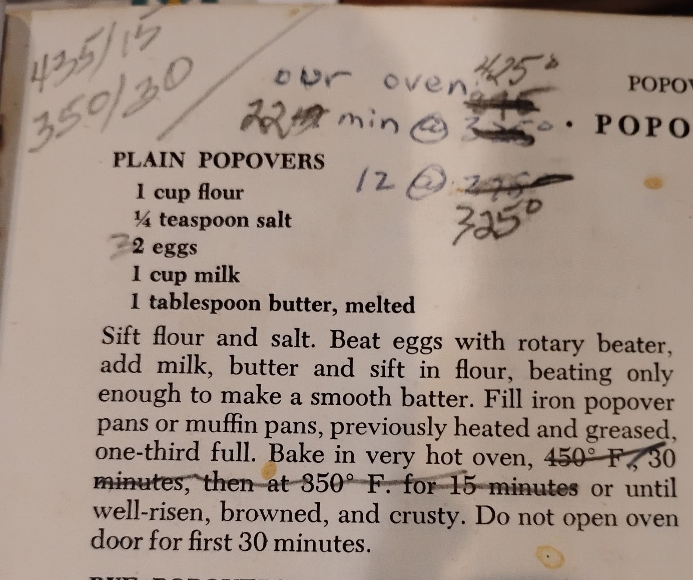

Plain Popovers - The Settlement Cookbook
Our Dad, Robert B. Kadel, loved to get up at the crack of dawn, have his coffee, and make these. Then he would wake us up by calling out "Popovers!" He was the only morning person in the family and it always felt like he was welcoming us to his new day. And it WAS his day, because he found it first.
Editor's note: Get them to really POP by starting with room temperature milk and eggs, and get the pan really hot before pouring in the batter. I loved to make a little slit at the top, insert a pat of butter into my hot popover, and swirl it around inside.
Ingredients
- 1 cup flour
- 1/4 teaspoon salt
- 2 eggs
- 1 cup milk
- 1 tablespoon melted butter
Instructions
- Sift flour and salt together.
- Beat eggs with a rotary beater, add milk and melted butter.
- Sift in the flour mixture, beating only enough to make a smooth batter.
- Fill popover pans or a muffin pan (previously heated and greased) one-third full.
- Bake in a very hot oven at 450°F for 30 minutes, then lower to 350°F for 15 minutes or until well-risen, browned, and crusty.
- Do not open the oven door for the first 30 minutes.
Oven Notes & Tips
Jo Dogan's notes in the photo suggest alternative times depending on your oven:
- 435°F for 15 minutes, then 350°F for 30 minutes.
- 425°F for 22 minutes, then 325°F for 12 minutes.
You may need to experiment to figure out what works best with your specific appliance.
Convection Oven Tips
- Lower the temperature: Reduce your convection oven temperature by about 25°F compared to a standard conventional recipe (e.g., use 425°F instead of 450°F, or 350°F instead of 375°F).
- Preheat the pan: Place your popover pan or muffin tin inside the oven while it preheats so the metal is hot before the batter goes in.
Note: You can also bake these successfully in an air fryer.
Yorkshire Pudding Variation
From the Food Network: Yorkshire pudding uses a similar batter and the same mixing technique:
- 3/4 cup flour
- 1/2 teaspoon salt
- 3 eggs
- 3/4 cup milk
- 1/2 cup beef drippings
Get the drippings smoking hot in the roasting pan or a cast iron skillet in a 450°F oven. Pour in the batter, and cook for 15-20 minutes until puffed up and browned like one giant popover. Serve immediately with the beef.